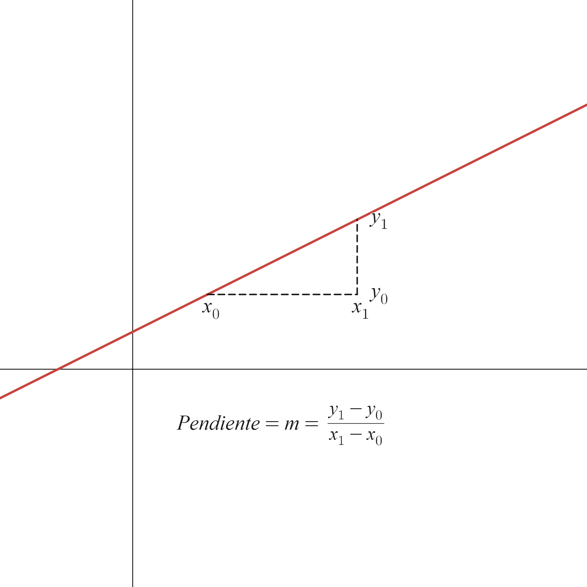
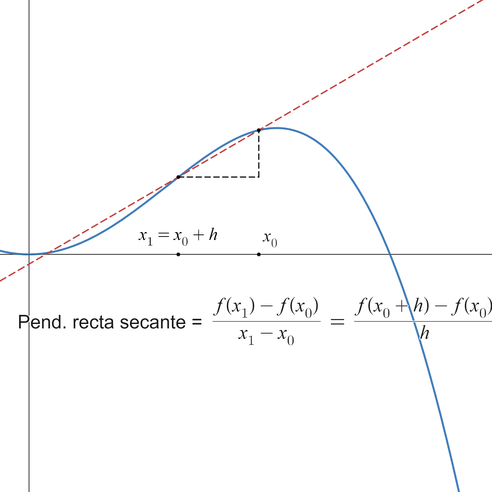
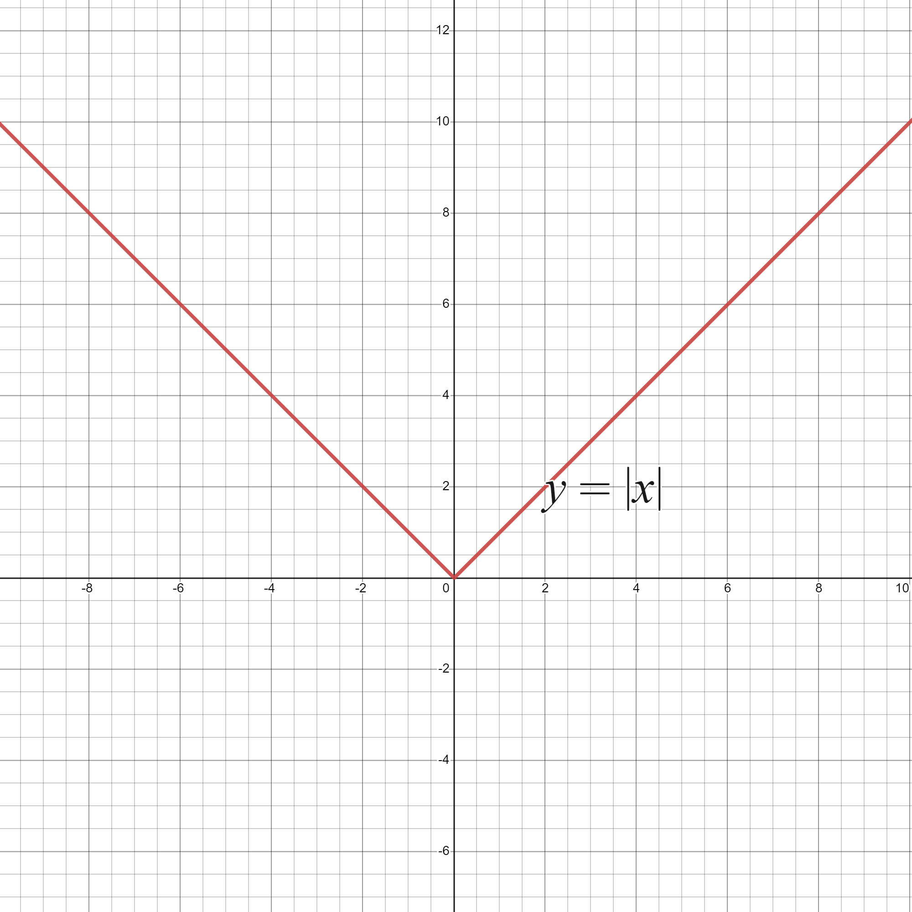

Definition of derivative and basic properties
Contents
3.1. Definition of derivative and basic properties#
3.1.1. Definition of derivative#
Let’s introduce this new concept through an example. For this we copy Galileo’s famous experiment on the Tower of Pisa and we ask ourselves:
Suppose we drop a ball from the top of a building. \(300\) m. What will be the speed of the ball after 5 seconds?
Galileo concluded that the space traveled is directly proportional squared of the elapsed time, according to the formula
formula that is very close to reality… as long as we neglect friction exerted by the air.
So how do we find the speed at \(t=5\) seconds? We can make a average speed:
or, better yet,
Really, what we are doing is approximating the slope of the tangent line to the function \(s\) at the point \(t=5\). Let us remember, first of all, that the slope of a line is the tangent of the angle it forms with the \(OX\) axis, as shown in the following figure:
{kind=link}
If now we want to calculate the slope of the tangent line to a function \(f\) at a point \(x_0\), what we will do is calculate the slopes of the lines secants to \(f\) by two nearby points, \(x_0\) and \(x\), and make \(x\) approach \(x_0\) (i.e., take the limit when \(x\to x_0\)). The Graphic illustration of this process is shown in the following figure (with which, by the way, you can play at the following link: https://www.desmos.com/calculator/piskepauzm):
{kind=link}
Definition
Sea \(f:(a,b)\rightarrow\mathbb{R}\), \(x_0\in(a,b)\). Definimos la derivada de \(f\) en \(x_0\) como el límite, si existe,
Remark
Aquí ya vemos la utilidad de no incluir el punto \(x_0\) (en este caso, el punto \(h=0\)) en la definición de límite. En la expresión \(\displaystyle\lim_{h\to 0}\frac{f(x_0+h)-f(x_0)}{h}\) no podemos hacer nada si \(h=0\), ya que tendríamos una división entre \(0\). Pero, afortunadamente, justo el punto \(h=0\) no se incluye en la definición de límite (recordemos eso de \(0<|h-0|<\delta\)…).
El cociente \(\frac{f(x)-f(x_0)}{x-x_0}\) mide la variación de la función respecto a la variación de la variable. Por ese motivo a \(f'(x_0)\) se le denomina, en ocasiones, coeficiente de variación de \(f\), o razón de cambio de la función \(f\), en el punto \(x_0\).
Es decir, la derivada de una función en un punto indica la variación instantánea de la función en ese punto. Por ejemplo, la aceleración, que es la variación de velocidad, se escribe matemáticamente como \(\frac{dv}{dx}\), es decir, la derivada de la velocidad respecto al tiempo.
Que la derivada sea la variación instantánea de una variable dependiente, \(y\), respecto a otra variable independiente, \(x\), será fundamental cuando veamos los modelos matemáticos en ecuaciones diferenciales.
Ahora ya podemos calcular la ecuación de la recta tangente utilizando la fórmula punto-pendiente,
\[ y-y_{0}=m\left(x-x_{0}\right) \Longrightarrow y=y_{0}+m\left(x-x_{0}\right). \]En este caso, \(\left(x_{0},y_{0}\right)=\left(x_{0},f\left(x_{0}\right)\right)\), \(m=f'\left(x_{0}\right)\). Y la recta tangente,
\[ y=f\left(x_{0}\right)+f'\left(x_{0}\right)\left(x-x_{0}\right). \]
3.1.2. Lateral derivatives#
Now, since we are defining the derivative as a limit, we can talk about derivative on the left and derivative on the right.
Definition (Derivadas laterales)
Sea \(f:(a,b)\rightarrow\mathbb{R}\), \(x_0\in(a,b)\). Definimos
derivada por la izquierda de \(f\) en \(x_0\) como
\[ f'(x_0^{-}):=\lim_{h\to 0^{-}}\frac{f(x_0+h)-f(x_0)}{h}, \]derivada por la derecha de \(f\) en \(x_0\) como
Property
Sea \(f:(a,b)\rightarrow\mathbb{R}\), \(x_0\in(a,b)\). \(f\) es derivable en \(x_0\) si y sólo si es derivable por la izquierda y por la derecha en \(x_0\) y ambas derivadas coinciden.
The most typical example of a non-differentiable function is the absolute value function, which is not differentiable at \(0\). Let’s see it, calculating its partial derivatives. Let us remember that
So,
Then \(f'\left(0^{-}\right)\not=f'\left(0^{+}\right)\), so the absolute value function is not derivable in \(0\).
Graphically, we can realize what is happening if we remember the graph of the absolute value function:
{kind=link}
The point \(x=0\) is an angular point for this curve, that is, a point at which the slope of the curve varies abruptly. It goes from being \(-1\) to the left of \(0\) to being \(1\) to its right. When this occurs sudden variation the function cannot be differentiable at \(0\).
Here you can see another complete example:
3.1.3. Derivation properties#
Let us now look at some important properties of the derived function.
Property
Sea \(f(a,b)\rightarrow\mathbb{R}\), \(x_0\in\mathbb{R}\). Si \(f\) es derivable en \(x_0\), entonces \(f\) es continua en \(x_0\).
This property can be summarized as
It is advisable to know how to read it correctly. According to the logical relationship
This property is the same as
This is the most common form of application. If you ask us if certain function is differentiable at some point, the first thing we must do is check if it is keep going. If indeed it is, we must check whether the definition of derived, but if it is not continuous we will have already finished, because in that case it cannot be derivable.
Property (Derivadas elementales)
\(\displaystyle \dfrac{d}{dx} \left(x^{n}\right) = nx^{n-1}\),
\(\displaystyle \dfrac{d}{dx} \left(\ln x\right) = \dfrac{1}{x}\),
\(\displaystyle \dfrac{d}{dx} \left(\log_{a}x\right) = \dfrac{1}{x}\log_{a} e\),
\(\displaystyle \dfrac{d}{dx} \left(e^x\right) = e^x\),
\(\displaystyle \dfrac{d}{dx} \left(a^x\right) = a^x\ln a\),
\(\displaystyle \dfrac{d}{dx} \left(\sin x\right) = \cos x\),
\(\displaystyle \dfrac{d}{dx} \left(\cos x\right) = -\sin x\),
\(\displaystyle \dfrac{d}{dx} \left(\tan x\right) = \dfrac{1}{\cos^2 x}\),
\(\displaystyle \dfrac{d}{dx} \left(\arcsin x\right) = \dfrac{1}{\sqrt{1-x^2}}\),
\(\displaystyle \dfrac{d}{dx} \left(\arccos x\right) = \dfrac{-1}{\sqrt{1-x^2}}\),
\(\displaystyle \dfrac{d}{dx} \left(\arctan x\right) = \dfrac{1}{1+x^2}\).
Property (Propiedades aritméticas de la derivada )
Sean \(f,g:(a,b)\rightarrow\mathbb{R}\), dos funciones derivables en un punto \(x_0\in(a,b)\). Entonces
para cualquier \(\lambda\in\mathbb{R}\), la función \(\lambda f\) es derivable en \(x_0\) y
\[ \left(\lambda f\right)'(x_0)=\lambda f'(x_0), \]\(f\pm g\) es derivable en \(x_0\) y
\[ \left(f\pm g\right)'(x_0)=f'(x_0)\pm g'(x_0), \]\(fg\) es derivable en \(x_0\) y
\[ \left(fg\right)'(x_0)=f'(x_0)g(x_0)+f(x_0)g'(x_0), \]si \(g(x_0)\not= 0\), entonces \(\dfrac{f}{g}\) es derivable en \(x_0\) y
\[ \left(\frac{f}{g}\right)'(x_0)=\frac{f'(x_0)g(x_0)-f(x_0)g'(x_0)}{g(x_0)^2}. \]
Property (Regla de la cadena )
Consideramos las funciones \(f:(a,b)\rightarrow\mathbb{R}\), derivable en \(x_0\in(a,b)\), y \(g:f(a,b)\to\mathbb{R}\), derivable en \(f(x_0)\). Entonces la función composición \(g\circ f\) es derivable en \(x_0\) y además
Let’s look at some examples of the application of these rules:
Derivar \(\ln\left(\cos x\right)\).
The result is
Let’s think about what we have done:
We are composing the function \(f(x)=\cos x\) with \(g(x)=\ln x\). This is easy to check, since
So according to the chain rule, \(\left(g\circ f\right)'(x)=g'\left(f(x)\right)f'(x)\).
Now, \(f'(x)=-\sin x\) and \(g'(x)=\frac{1}{x}\), so \(g'(\cos x)=\frac{1}{ \cos x}\), which allows us to obtain the announced result.
Let’s look at a slightly more complicated application example.
where we have used twice that \(\sin^2 x+\cos^2 x=1\).
3.1.4. Derivation in Sympy#
To symbolically calculate the first derivative of a function using Sympy, the diff function is used. For example
import sympy as sp
x=sp.symbols('x')
f_exp=sp.exp(x)*sp.cos(x)
d1f_exp=sp.diff(f_exp,x)
print('Para la función: ',f_exp)
print('La derivada primera es: ',d1f_exp)
Para la función: exp(x)*cos(x)
La derivada primera es: -exp(x)*sin(x) + exp(x)*cos(x)
3.1.5. Derivation of some special cases.#
3.1.5.1. Derivation of the inverse function.#
For example, \(f:(a,b)\to\mathbb{R}\), \(x_0\in(a,b)\). Suppose that \(f\) is derivable at \(x_0\) and that \(f(x_0)\not=0\). Then \(f^{-1}\), if it exists, is differentiable and
Or what is the same,
Let’s highlight that we are relating the derivative of the inverse function with \(1\) split by the derivative of the inverse function. This is quite surprising, because at these heights we must already know that \(f^{-1}\not=\frac{1}{f}\).
Let’s look at an example. If we consider the function \(y=f(x)=\cos x\), the function inverse is the arc-cosine, \(f^{-1}(y)=\arccos y\). Deriving directly,
Let’s see if this expression matches the one we obtain by applying the formula that we explained at the beginning. In this case
where, in the last equality, we have used the initial definition of the function: \(y= f(x)=\cos x\).
3.1.5.2. Implicit derivation#
An implicit equation is an equation of the form
that is, an equation where \(x\) and \(y\) appear mixed and where it is not possible (usually) separate the \(y\) to arrive at an explicit equation,
An example of an implicit equation would be
If from an implicit equation we want to know the value of the derivative of \(y\) with respect to \(x\), \(y'=\frac{dy}{dx},\) we will differentiate term by term, using the usual rules of derivation, but taking into account that in the terms where \(y\), or something that depends on \(y\), appears when differentiating using the chain rule we will obtain the corresponding expression multiplied by \(y'\). This does not happen if the term depends on \(x\), since when we differentiate with respect to \(x\) the derivative would appear of \(x\) with respect to the same \(x\), \(\frac{dx}{dx}\), which is \(1\). Let’s see some example simple:
\(\displaystyle \left(x^3\right)'=3x^2\frac{dx}{dx}=3x^2\),
\(\displaystyle \left(y^3\right)'=3y^2\frac{dy}{dx}=3y^2y'\),
\(\displaystyle \left(cos(2y)\right)=-\sin(2y)2\frac{dy}{dx}=-2\sin(2y)y'\).
Then, in a more complicated derivative (using the derivation rule of product),
As we can see, the final result is the value of \(y'\) as a function of \(x\) and \(y\). It is generally not possible to obtain the value of \(y'\) solely as a function of \(x\).
You can look at the following links, if you want to understand this better:
https://es.snapxam.com/calculators/calculadora-derivacion-implicita (Calculator to derive implicit functions! If there is everything on the internet…)
3.1.5.3. Logarithmic derivation#
Suppose we have an expression of the type
and we want to derive it. Since we have a function that depends on \(x\) both in the base and In the exponent we cannot do it directly. Then we apply logarithms and of the previous expression results
and now we do an implicit derivation to obtain
Let’s look at it on an example:
Here you have more information and other examples:
3.1.6. Hospital regulations#
{kind=link}
(Image taken from the Twitter account @MathMatize, specifically from https://twitter.com/MathMatize/status/1678166772359348225)
We still have one point left that we must resolve: When we apply the arithmetic properties of limits we can find an unpleasant surprise if any of the parties involved have a limit of \(+\infty\) or \(-\infty\). For example, if we remember that \(\displaystyle\lim _{x\to x_{0}} \left(f(x)+g(x)\right) = \lim _{x\to x_{0}} f(x ) + \lim _{x\to x_{0}} g(x)\), if we now assume that \(\displaystyle\lim _{x\to x_{0}} f(x) = 4\), and \(\displaystyle\ lim_{x\to x_{0}} g(x) = + \infty\), how do we add \(4\) and \(+\infty\)?
There are some rules that help us do these operations with limits where + or -\(\infty\) appears or, also, at \(0\) (sometimes this is called infinity arithmetic). You can look at the table here: http://asignaturas.topografia.upm.es/matematicas/primero/Apuntes/Funciones/Operaciones con limites infinitos.pdf, we summarize it below:
Property (Operaciones con límites infinitos)
Suma:
\(\lambda + \infty = +\infty\), \(\forall \lambda\in\mathbb{R}\),
\(\lambda - \infty = -\infty\), \(\forall \lambda\in\mathbb{R}\),
\(+\infty+\infty = +\infty\),
\(-\infty-\infty=-\infty\).
Multiplicación:
\(\lambda*\pm\infty=\pm\infty\), \(\forall \lambda >0\),
\(\lambda*\pm\infty=\mp\infty\), \(\forall \lambda <0\),
\((+\infty)(+\infty) = (-\infty)(-\infty) = +\infty\),
\((+\infty)(-\infty) = (-\infty)(+\infty) = -\infty\).
División:
\(\displaystyle\frac{\lambda}{\pm\infty} = 0\), \(\forall \lambda\in\mathbb{R}\), \(\lambda\neq 0\),
\(\displaystyle\frac{\lambda}{0^{+}} = +\infty\), \(\displaystyle\frac{\lambda}{0^{-}} = -\infty\), \(\forall \lambda > 0\),
\(\displaystyle\frac{\lambda}{0^{+}} = -\infty\), \(\displaystyle\frac{\lambda}{0^{-}} = +\infty\), \(\forall \lambda < 0\),
\(\displaystyle\frac{+\infty}{0^{+}}=+\infty\) (en otros casos, se aplica la regla de los signos),
\(\displaystyle\frac{0}{\pm\infty}=0\).
[Nota: Diremos que \(\displaystyle\lim_{x\to x_0} f(x) = 0^{+}\) si la función se acerca a \(0\) por valores positivos, es decir, desde la derecha.]
Potencias:
\(\displaystyle 0^{+\infty} = 0\),
\(\displaystyle 0^{-\infty} = +\infty\),
\(\displaystyle\left(+\infty\right)^{+\infty} = +\infty\),
\(\displaystyle \left(+\infty\right)^{-\infty} = 0\),
\(\displaystyle \left(-\infty\right)^{+\infty} = \not\exists\,\).
In any case, we remember again that we are not operating with real numbers and symbols. By saying, for example, that \(5 + \infty = +\infty\) what we really mean is that if we add a function that, at a given point, has a limit of \(5\) with another function that, at the same point, has as a limit \(+\infty\), the result will have a limit \(+\infty\).
However, there are some operations with infinite limits that do not always give the same result. They are called indeterminations. Namely:
Property (Indeterminaciones)
\(\displaystyle \frac{0}{0} = \) INDETERMINADO,
\(\displaystyle \frac{\pm\infty}{\pm\infty} = \) INDETERMINADO,
\(\displaystyle 0\left(\pm\infty\right) = \) INDETERMINADO,
\(+\infty - \infty = \) INDETERMINADO,
\(\displaystyle 1^{\pm\infty} = \) INDETERMINADO,
\(\displaystyle 0^{0} = \) INDETERMINADO,
\(\displaystyle \left(\pm\infty\right)^{0} = \) INDETERMINADO.
Be careful! When we say INDETERMINATE we do not mean that the limit does not exist, but rather that the result may vary depending on the case. For example, there are times when dividing a function that converges to \(+\infty\) by another function that also converges to \(+\infty\) the limit of the quotient will be \(5\), but in other cases the quotient converges to \(0\), l to \(+\infty\), or to…
Since we cannot give a result a priori we will have to study case by case. How do you do that? It doesn’t always work, but in many cases we can use the L’Hôpital Rule.
Theorem (Regla de l Hôpital )
Sea \(x_{0}\in\mathbb{R}\) y \(f\) y \(g\) funciones derivables en \(\left(x_{0}-r, x_{0}\right)\cup\left(x_{0}, x_{0}+r\right)\).
Si \(\displaystyle \lim_{x\to x_{0}} f(x) = \displaystyle\lim_{x\to x_{0}} g(x) = 0\) y \(\exists\displaystyle\lim_{x\to x_{0}} \dfrac{f'(x)}{g'(x)}\) entonces \(\exists\displaystyle\lim_{x\to x_{0}} \dfrac{f(x)}{g(x)}\) y
Remark
El recíproco no es cierto: \(\exists\displaystyle\lim_{x\to x_{0}} \dfrac{f(x)}{g(x)} \not\Rightarrow \exists\displaystyle\lim_{x\to x_{0}} \dfrac{f'(x)}{g'(x)}\).
El enunciado del teorema también es válido si \(\displaystyle \lim_{x\to x_{0}} f(x) = \pm\infty\) y \(\displaystyle\lim_{x\to x_{0}} g(x) = \pm \infty\) y/o \(x_{0}=\pm\infty\).
Si en la expresión \(\displaystyle\lim_{x\to x_{0}} \dfrac{f'(x)}{g'(x)}\) se vuelve a producir una indeterminación del tipo \(\frac{0}{0}\) o \(\frac{\infty}{\infty}\) (y se cumplen el resto de hipótesis), se puede volver a aplicar l’Hôpital.
Las indeterminaciones \(0\,\infty\), \(+\infty-\infty\), \(0^{0}\), \(\infty^{0}\) o \(1^{\infty}\) se pueden convertir en indeterminaciones resolubles con l’Hôpital.
Historical curiosity: Today known as L’Hôpital Rule owes its name to Guillaume de l’Hôpital, Marquis of Saint Mesme, who was an amateur mathematician of the 17th century, and who published the famous theorem in a book in 1696. However, the result was really the result of the work of Johann Bernoulli (little brother of the more famous Jacob Bernoulli, one of the greatest mathematicians in history), who worked for said marquis and who saw how he stole his idea. You can see more juicy details of this mathematical sauce here (short and in Spanish, let’s see if you dare): https://emis.univie.ac.at//journals/DM/v1/art7.pdf.